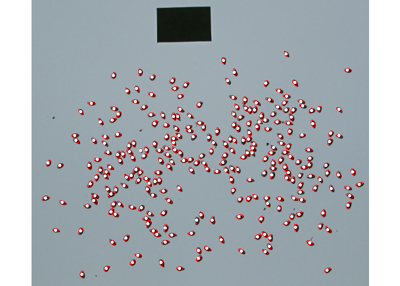
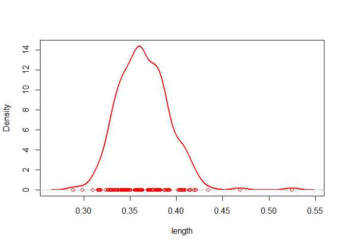
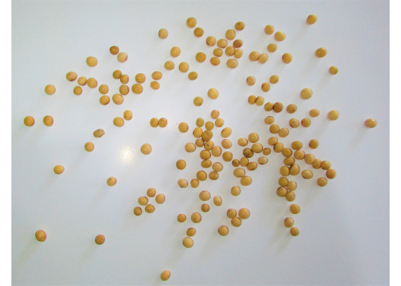
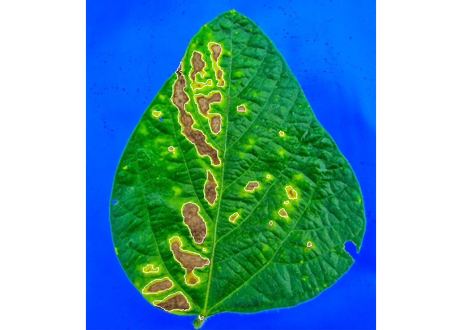

The pliman (plant image analysis) package is designed to analyze plant images, particularly for leaf and seed analysis. It offers a range of functionalities to assist with various tasks such as measuring disease severity, counting lesions, obtaining lesion shapes, counting objects in an image, extracting object characteristics, performing Fourier Analysis, obtaining RGB values, extracting object coordinates and outlines, isolating objects, and plotting object measurements.
pliman also provides useful functions for image transformation, binarization, segmentation, and resolution. Please visit the Examples page on the pliman website for detailed documentation of each function.
Installation
Install the latest stable version of pliman from CRAN with:
install.packages("pliman")The development version of pliman can be installed from GitHub with:
devtools::install_github("TiagoOlivoto/pliman")
# To build the HTML vignette use
devtools::install_github("TiagoOlivoto/pliman", build_vignettes = TRUE)Note: If you are a Windows user, you should also first download and install the latest version of Rtools.
Analyze objects
The function analyze_objects() can be used to analyze objects such as leaves, grains, pods, and pollen in an image. By default, all measures are returned in pixel units. Users can adjust the object measures with get_measures() provided that the image resolution (Dots Per Inch) is known. Another option is to use a reference object in the image. In this last case, the argument reference must be set to TRUE. There are two options to identify the reference object:
- By its color, using the arguments
back_fore_indexandfore_ref_index
- By its size, using the arguments
reference_largerorreference_smaller
In both cases, the reference_area must be declared. Let’s see how to analyze an image with flax grains containing a reference object (rectangle with 2x3 cm). Here, we’ll identify the reference object by its size; so, the final results in this case will be in metric units (cm).
library(pliman)
img <- image_pliman("flax_grains.jpg")
flax <-
analyze_objects(img,
index = "GRAY",
reference = TRUE,
reference_larger = TRUE,
reference_area = 6,
marker = "point",
marker_size = 0.5,
marker_col = "red", # default is white
show_contour = FALSE) # default is TRUE
# summary statistics
flax$statistics
# stat value
# 1 n 2.680000e+02
# 2 min_area 3.606989e-02
# 3 mean_area 6.250403e-02
# 4 max_area 1.262446e-01
# 5 sd_area 8.047152e-03
# 6 sum_area 1.675108e+01
# 7 coverage 5.388462e-02
# plot the density of the grain's length (in cm)
plot(flax, measure = "length")
Analyzing shapefiles
The analyze_objects_shp() function performs object analysis based on shapefiles (rows and columns). Possible applications include computing canopy coverage and vegetation indexes useful for high-throughput phenotyping. By default analyze_objects_shp() calls image_prepare_mv() internally, allowing alignment and crop the image before processing. In the following example, we compute the canopy coverage and the Normalized Green Red Difference Index (NGRDI) for each one of the 12 soybean plots.
shp <- image_pliman("field_mosaic.jpg")
res <-
analyze_objects_shp(shp,
ncol = 12,
nrow = 1,
buffer_x = 0.1, # defaults is 0
index = "HUE", # used to segment the soil
object_index = "NGRDI")
plot_index_shp(res, attribute = "coverage", viewer = "base")
Disease severity
Using image indexes
To compute the percentage of symptomatic leaf area you can use the measure_disease() function you can use an image index to segment the entire leaf from the background and then separate the diseased tissue from the healthy tissue. Alternatively, you can provide color palette samples to the measure_disease() function. In this approach, the function fits a general linear model (binomial family) to the RGB values of the image. It then uses the color palette samples to segment the lesions from the healthy leaf.
In the following example, we compute the symptomatic area of a soybean leaf. The proportion of healthy and symptomatic areas is given as a proportion of the total leaf area after segmenting the leaf from the background (blue).
img <- image_pliman("sev_leaf.jpg")
# Computes the symptomatic area
sev <-
measure_disease(img = img,
index_lb = "B", # to remove the background
index_dh = "NGRDI", # to isolate the diseased area
threshold = c("Otsu", 0), # You can also use the Otsu algorithm in both indexes (default)
plot = TRUE)
sev$severity
# healthy symptomatic
# 1 92.62721 7.372791Interactive disease measurements
An alternative approach to measuring disease percentage is available through the measure_disease_iter() function. This function offers an interactive interface that empowers users to manually select sample colors directly from the image. By doing so, it provides a highly customizable analysis method.
One advantage of using measure_disease_iter() is the ability to utilize the “mapview” viewer, which enhances the analysis process by offering zoom-in options. This feature allows users to closely examine specific areas of the image, enabling detailed inspection and accurate disease measurement.
img <- image_pliman("sev_leaf.jpg", plot = TRUE)
# works only in an interactive section
measure_disease_iter(img, viewer = "mapview")Citation
citation("pliman")
Please, support this project by citing it in your publications!
Olivoto T (2022). "Lights, camera, pliman! An R package for plant
image analysis." _Methods in Ecology and Evolution_, *13*(4),
789-798. doi:10.1111/2041-210X.13803
<https://doi.org/10.1111/2041-210X.13803>.
Uma entrada BibTeX para usuários(as) de LaTeX é
@Article{,
title = {Lights, camera, pliman! An R package for plant image analysis},
author = {Tiago Olivoto},
year = {2022},
journal = {Methods in Ecology and Evolution},
volume = {13},
number = {4},
pages = {789-798},
doi = {10.1111/2041-210X.13803},
}Getting help
If you come across any clear bugs while using the package, please consider filing a minimal reproducible example on github. This will help the developers address the issue promptly.
Suggestions and criticisms aimed at improving the quality and usability of the package are highly encouraged. Your feedback is valuable in making {pliman} even better!
Code of Conduct
Please note that the pliman project is released with a Contributor Code of Conduct. By contributing to this project, you agree to abide by its terms.